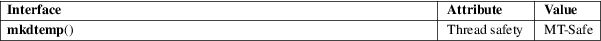

mkdtemp − create a unique temporary directory
Standard C library (libc, −lc)
#include <stdlib.h>
char *mkdtemp(char *template);
Feature Test Macro Requirements for glibc (see feature_test_macros(7)):
mkdtemp():
/* Since glibc 2.19: */ _DEFAULT_SOURCE
|| /* glibc 2.19 and earlier: */ _BSD_SOURCE
|| /* Since glibc 2.10: */ _POSIX_C_SOURCE >= 200809L
The mkdtemp() function generates a uniquely named temporary directory from template. The last six characters of template must be XXXXXX and these are replaced with a string that makes the directory name unique. The directory is then created with permissions 0700. Since it will be modified, template must not be a string constant, but should be declared as a character array.
The mkdtemp() function returns a pointer to the modified template string on success, and NULL on failure, in which case errno is set to indicate the error.
|
EINVAL |
The last six characters of template were not XXXXXX. Now template is unchanged. |
Also see mkdir(2) for other possible values for errno.
For an explanation of the terms used in this section, see attributes(7).

POSIX.1-2008.
glibc 2.1.91. NetBSD 1.4. POSIX.1-2008.
mktemp(1), mkdir(2), mkstemp(3), mktemp(3), tempnam(3), tmpfile(3), tmpnam(3)